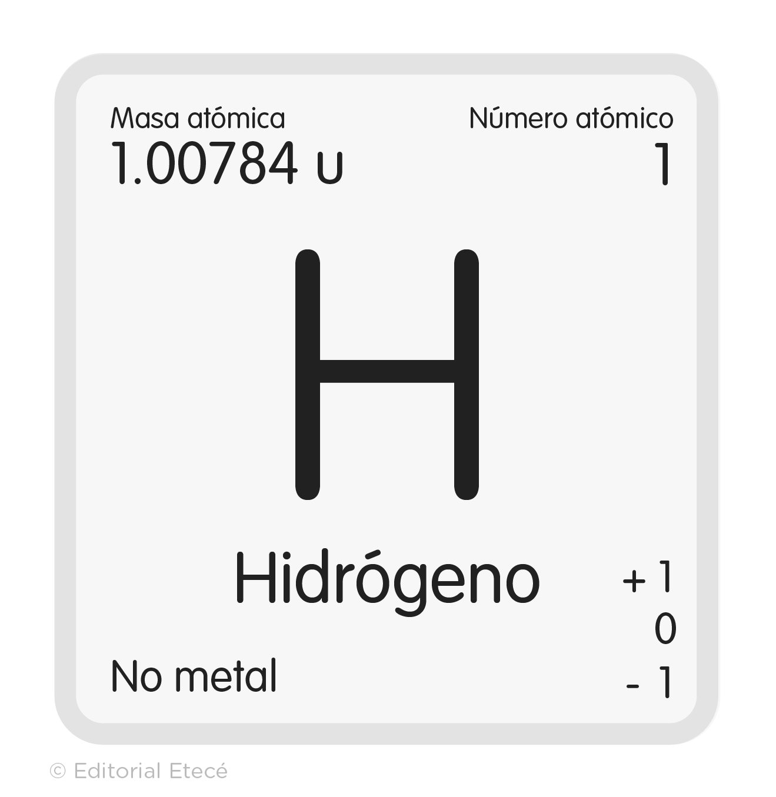
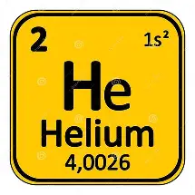
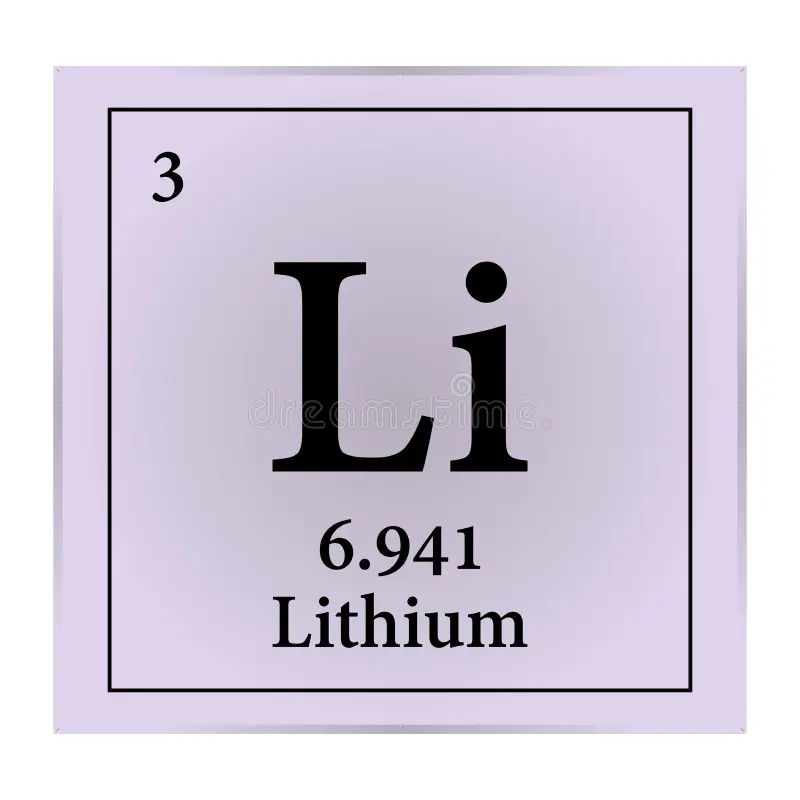
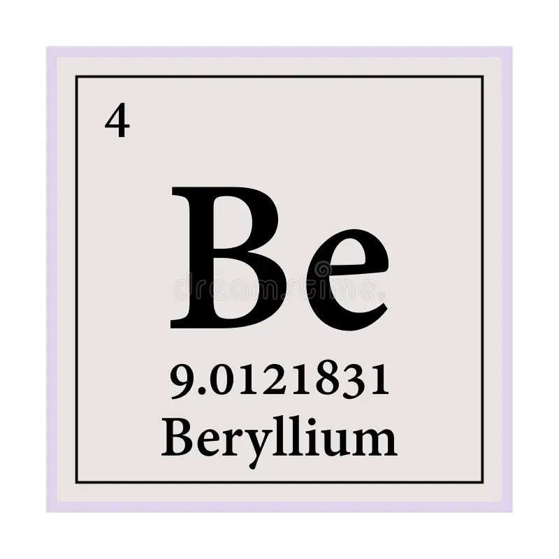
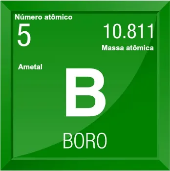
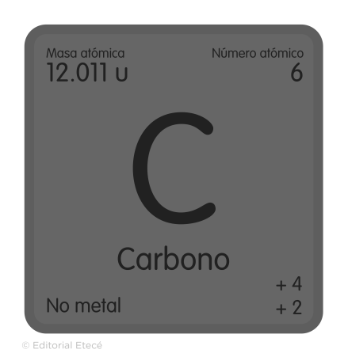
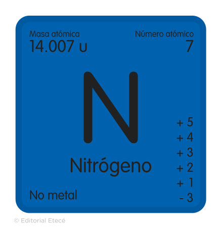
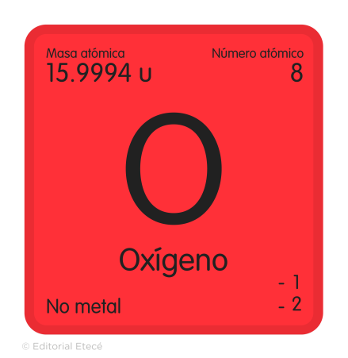
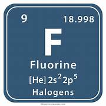
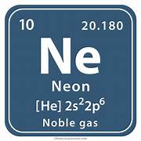

El hidrógeno es el primer elemento de la tabla periódica y el más abundante del universo conocido: constituye más de las tres cuartas partes de toda la materia observable. Es un elemento liviano, con la forma atómica más simple conocida, y usualmente se presenta como un gas diatómico (H2) incoloro, inodoro e inflamable. El hidrógeno fue descubierto por el físico y químico británico Henry Cavendish en 1766 y forma la mayor parte de la masa de las estrellas en su fase inicial. Nuestro Sol, de hecho, es una enorme bomba de fusión de hidrógeno en el espacio. Según los expertos, el hidrógeno habría sido el primer elemento en constituirse de todos y es indispensable para la formación del agua (H2O). Hoy en día, el hidrógeno es producido industrialmente y aprovechado en numerosas aplicaciones, desde el refinamiento de combustibles fósiles hasta la soldadura y la criogenia.
Propiedades atómicas. El átomo de hidrógeno es el átomo más liviano conocido (masa atómica de 1,00794 u.m.a) y presenta un único electrón en su capa externa, por lo que su valencia es de 1. Es un átomo no metálico, altamente oxidable, con un único protón en el núcleo.
Propiedades físicas. En condiciones ordinarias de presión y temperatura (1 atm y 25 °C), el hidrógeno se comporta como un gas incoloro e inodoro. Sin embargo, es posible licuarlo (llevarlo a líquido) a altas presiones, como ocurre en el corazón de las estrellas, o en los tanques de refrigeración en que se emplea hidrógeno líquido como refrigerante.
Inflamabilidad. El hidrógeno en su forma diatómica gaseosa (H) es un gas muy inflamable, que reacciona de manera espontánea con elementos oxidantes como el oxígeno, cloro o flúor. Además, forma parte esencial de otras materias muy combustibles, como los hidrocarburos (hidrógeno y carbono), entre los que figuran los combustibles fósiles.

El helio es un elemento que se encuentra en estado gaseoso en condiciones normales de presión y temperatura, contiene el número máximo de electrones permitido en su capa de valencia 1s2. Debido a su peculiar comportamiento químico, el helio forma parte del grupo de los gases nobles; estos no son reactivos químicamente y poseen altas energía de ionización
Este elemento gaseoso se encuentra en el aire ocupando el 0,0018 por ciento en volumen, en sus distintas formas es el más importante de los gases nobles, se puede encontrar también como helio líquido el cual se utiliza como refrigerante para realizar experimentos a muy baja temperatura

El litio es el metal más ligero conocido. Es un mineral de color que puede variar de blanco a gris, pero cuando se arroja al fuego, emite una llamarada carmesí brillante. Es un elemento conocido por sus múltiples usos, como en la fabricación de aviones y en ciertas baterías. También, se usa en medicamentos para tratar la salud mental, como por ejemplo, del trastorno bipolar.
>Fue descubierto por un naturalista y estadista brasileño, José Bonifácio de Andrada e Silva, quien descubrió el mineral petalita (LiAISi4O10) en la isla sueca de Utö en la década de 1790
El litio se presenta en general de tres formas: como pegmatitas, minerales de gran tamaño; como salmueras en salares, y en rocas sedimentarias. De estas posibilidades, es en las salmueras donde se observa su mayor presencia en la naturaleza, destacando el norte de Chile, Argentina y Bolivia, siendo los países que presentan los principales depósitos en salares.
En la actualidad, Chile es uno de los grandes exportadores de litio a nivel mundial, y posee un gran porcentaje de las reservas mundiales. No obstante, son las pegmatitas las que, a nivel mundial, contribuyen con mayor porcentaje a la producción de litio en el mundo, con un 55%, mientras que las salmueras contribuyen en un 45% aproximadamente.

El berilio es un elemento químico perteneciente al grupo de los metales alcalinotérreos y su número atómico es el 4 en la tabla periódica. Descubierto en 1798 por Louis-Nicolas Vauquelin, el berilio es un metal ligero, duro y de color gris plateado. Sus propiedades únicas, como su alta rigidez, baja densidad y buena conductividad térmica, lo convierten en un material muy versátil, muy solicitado en diversas aplicaciones industriales. En este artículo, exploraremos la historia, la estructura, las propiedades y los principales usos del berilio.
El berilio se encuentra en la pegmatita, asociado con mica, feldespato y cuarzo. Mediante una técnica de flotación, se puede separar una mezcla de berilo y feldespato. Posteriormente, el feldespato y el berilo se concentran y se tratan con hipoclorito de calcio. Después del tratamiento con ácido sulfúrico y sulfonato de potasio, mediante dilución, el berilo se flota, separándolo del feldespato. El berilo se trata con fluorosilicato de sodio y sosa a 770 °C para formar fluoroberilato de sodio, óxido de aluminio y dióxido de silicio. Posteriormente, el hidróxido de berilio se precipita de la solución de fluoroberilato de sodio con hidróxido de sodio.

En realidad, no es en si solo el elemento Boro, es la familia del boro que está conformado por los elementos del aluminio(AI), Galio(Ga), Indio(In) y Talio(Ti) que también so conocidos como elementos térreos, boroides o boroideos. El boro es un elemento químico ubicado en la Fila IIIA cuy símbolo es B, número átomico 5, peso atomico 10.811 que se comporta como no metal, el boro es un elemento considerado metaloide y es el unico que posee menos de 4 electrones en su estructura. El boro tiene diferentes usos en diferentes sectores industriales, pero en el que mas se utiliza es en el sector metalúrgico, debido a su gran reactividad a temperaturas altas.
Fue descubietto por H. Davy, J. L. Gay-Lussac y L. J. Thenard en el año de 1808, fue encontrado en su forma más común que es el Borax, este elemento normalmente podemos encontrarlo en depósitos evaporados producidos por la evaporación repetida de los lagos estacionales
El boro se obtiene principalmente a partir de minas de boro en regiones áridas en Turquia y EE.UU.. y tambien en Argentina, Chile, Rusia y Perú. Principalmente, el boro accede al medioambiente tras la meteorización de rocas con boro, desde el agua de mar en forma de vapor de ácido bórico y por actividades geotérmicas tales vomo volcanes y vapores geotérmico causando asi que tenga na presencia en la corteza terrestres de 10ppm.

El carbono es un elemento químico no metálico cuyo símbolo químico es C. Se debe su nombre al carbón, vegetal o mineral, en donde sus átomos definen variadas estructuras. Forma una amplia gama de compuestos orgánicos e inorgánicos, y se presenta además en un considerable número de alótropos. Se halla en todos los seres vivos. Todas sus biomoléculas deben su existencia a la estabilidad y fuerza de los enlaces C-C y su alta tendencia a concatenarse. Es el elemento de la vida, y con sus átomos se construyen sus cuerpos. Los compuestos orgánicos con los que se construyen los biomateriales consisten prácticamente en esqueletos carbonados y heteroátomos. Estos pueden apreciarse a simple vista en la madera de los árboles, y también, cuando un rayo cae sobre ellos y los rostiza. El sólido negro inerte remanente también posee carbono, pero se trata de carbón vegetal.
Además de ser el elemento químico componente común en todas las formas de vida, el carbono en la naturaleza está presente en tres formas cristalinas: diamante, grafito y fulereno. También existen varias formas minerales amorfas de carbón (antracita, lignito, hulla, turba), formas líquidas (variedades de petróleos) y gaseosas (gas natural).

El nitrógeno es un elemento químico de la Tabla Periódica que se representa con el símbolo N. Tiene número atómico 7 y masa atómica 14.007 uma. Es un no metal y a presión y temperatura normal (1 atm y 20 °C) existe como dinitrógeno (N2), un gas molecular. Este elemento químico está presente en los seres vivos, ya que forma parte de las proteínas, del ácido desoxirribonucleico (ADN), del ácido ribonucleico (ARN) y del adenosín trifosfato (ATP). Por otra parte, el nitrógeno constituye el 78 % de la atmósfera terrestre, donde está presente en forma de nitrógeno molecular (N2), que es una molécula muy estable, por lo que es difícil que reaccione con otras moléculas para formar compuestos químicos. No obstante, el nitrógeno experimenta algunas reacciones químicas en la atmósfera.
El nitrógeno tiene diversas aplicaciones en distintos procesos llevados a cabo por las personas. Uno de sus principales usos es como componente de partida en la producción de amoníaco (NH3). Además, se utiliza para inflar los neumáticos de los aviones, en la producción de acero inoxidable, en la extinción de incendios y en la fabricación de bombillas. Por otra parte, existen muchos compuestos químicos que contienen nitrógeno que son ampliamente empleados por el hombre en distintas actividades, como por ejemplo:
El nitrógeno constituye el 78 % de la atmósfera. Además, este elemento químico forma parte de los seres vivos ya que está presente en las proteínas: en el cuerpo humano ocupa el 3 % de la composición de elementos químicos. Por otra parte, el nitrógeno está presente en productos de desecho de los seres vivos, como el guano, la urea y el ácido úrico. También se encuentra en forma de iones nitratos (NO3–), en la superficie terrestre y en las aguas del planeta.

El oxígeno es un elemento químico de la Tabla Periódica que se representa con el símbolo O. Es el elemento más abundante en la Tierra y el más abundante del universo, después del helio (He) y el hidrógeno (H). Tiene número atómico 8 y masa atómica 15.9994 uma. Es un no metal, es muy reactivo y tiene una electronegatividad (capacidad de un átomo de atraer hacia sí mismo los electrones del enlace químico que forma con otro átomo) muy alta, solo superada por la del flúor (F). En condiciones normales de presión y temperatura (1 atm y 20 ⁰C) el oxígeno existe como oxígeno molecular (O2), un gas diatómico (formado por dos átomos) que es inodoro, incoloro e insípido. Además, el oxígeno compone aproximadamente el 21 % del aire.
El oxígeno se encuentra en forma gaseosa en la atmósfera como oxígeno molecular (O2), y forma aproximadamente el 21 % del aire. Además, el agua de los ríos, mares y lagos contienen oxígeno disuelto. Por otra parte, el oxígeno se encuentra formando parte de algunas moléculas fundamentales para sostener la vida en el planeta, como el agua (H2O), el dióxido de carbono (CO2), los aminoácidos que forman las proteínas y el ADN. El oxígeno es parte de los organismos vivos. El oxígeno también forma el ozono (O3) en la capa de ozono, y a alturas que superan la órbita baja de la Tierra, se encuentra en forma de oxígeno atómico (O).
El oxígeno se utiliza en diversos sectores industriales y es fundamental en muchos procesos, vehículos y equipos como:
El oxígeno es un elemento muy importante: la vida no sería posible sin el oxígeno, pero, además, los seres humanos hemos encontrado formas de darle uso a niveles industriales, para la fabricación de productos utilizados en muchos sectores, tanto metalúrgicos, cosméticos, como en la medicina.
El oxígeno es imprescindible para el mantenimiento de la vida de los seres vivos. El proceso de respiración celular, por el que los organismos vivos producen la energía necesaria para vivir, se realiza en presencia de oxígeno. Sin este elemento, los seres vivos no podrían respirar y se terminaría la vida en el planeta. Gracias al constante ingreso de oxígeno a los organismos vivos es posible que puedan realizar sus funciones vitales como la respiración, la digestión, el crecimiento y la reproducción. Además, el oxígeno les permite a estos organismos tener la suficiente energía para moverse de un lugar a otro.

El flúor es un elemento químico, de símbolo F, y encabeza el grupo 17, al cual pertenecen los halógenos. Se distingue por ser el más reactivo y electronegativo de todos los elementos, reacciona casi con todos los átomos, por lo que forma infinidad de sales y compuestos organofluorados. En condiciones normales, es un gas de color amarillo pálido, que puede confundirse con el verde amarillento. En estado líquido, se intensifica un poco más su color amarillo, que desaparece por completo cuando solidifica en su punto de congelación. Es tal su reactividad, a pesar de lo volátil de su gas, que permanece atrapado en la corteza terrestre, especialmente en forma de mineral fluorita, conocido por sus cristales violeta, como en la imagen superior. Su reactividad lo hace una sustancia potencialmente peligrosa, reacciona vigorosamente con todo lo que toca y arde en llamas.
El flúor es un gas amarillo pálido o marrón altamente corrosivo. Si alguna vez te has preguntado para qué sirve el flúor, a continuación tienes una lista de sus posibles usos:

El neón es un elemento químico, y su símbolo es Ne. Es un gas noble cuyo nombre en griego significa nuevo, cualidad que pudo sostener durante décadas no solo por su descubrimiento, sino por además adornar con su luz las ciudades en el desarrollo de la modernización. Este gas, que consiste prácticamente en átomos Ne, indiferentes los unos a los otros, representa la sustancia más inerte y noble de todas, es el elemento más inerte de la tabla periódica, y actual y formalmente no se le conoce un compuesto lo suficientemente estable. Es aún más inerte que el helio, pero también más costoso. Es más fácil extraer el helio de las reservas de gas natural, que licuar aire y extraer neón. Además, su abundancia es menor que la del helio, tanto dentro como fuera de la Tierra. En el Universo, el neón se halla en las novas y supernovas, y en regiones lo suficientemente congeladas para impedir que escape. En su forma líquida, es un refrigerante mucho más efectivo que el helio y el hidrógeno líquidos. Asimismo, está presente en la industria electrónica (láseres y equipos que detectan radiaciones).
El neón es un gas inofensivo desde casi todos los aspectos posibles. Debido a su nula reactividad química, no interviene con ningún proceso metabólico, y así como entra en el organismo sale de él sin ser asimilado. No tiene efecto farmacológico inmediato, aunque, se le ha asociado con posibles efectos anestésicos. Por eso, si hay una fuga de neón, no representa una alarma preocupante. No obstante, si la concentración de sus átomos en el aire es muy grande, puede desplazar las moléculas de oxígeno, lo cual provocaría asfixia y toda una serie de síntomas asociados. El neón líquido sí podría causar quemaduras frías al contacto, por lo que no se aconseja tocarlo directamente. Asimismo, si la presión de sus contenedores es muy alta, una fisura abrupta podría ser explosiva, no por la presencia de llamas sino por la fuerza del gas.